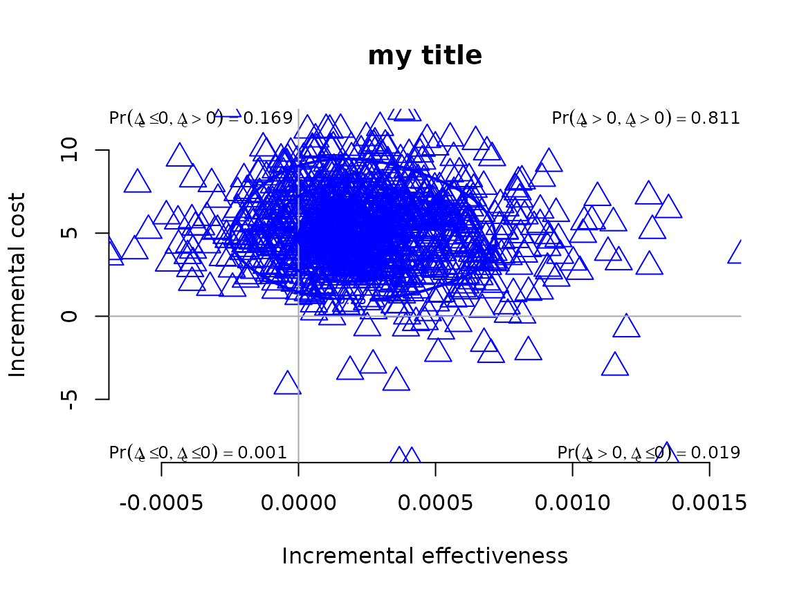
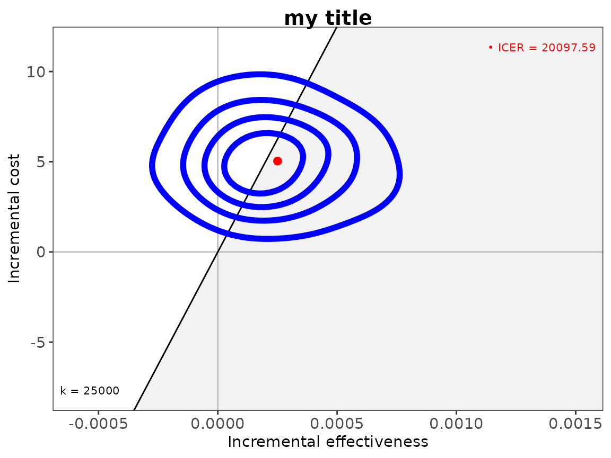
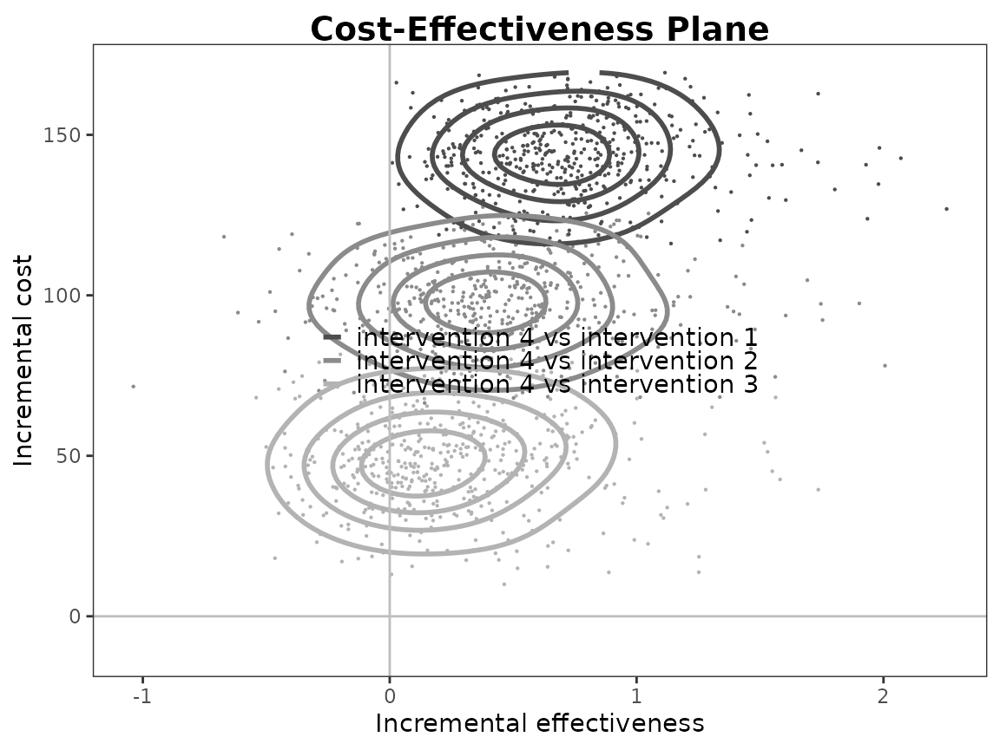
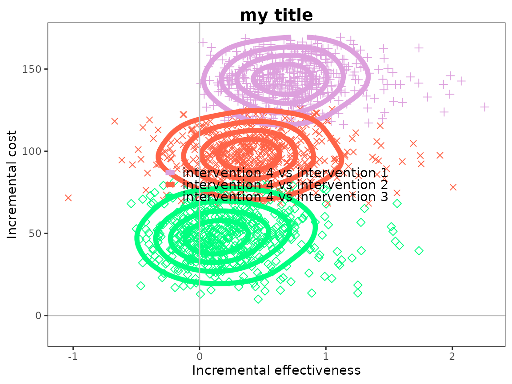
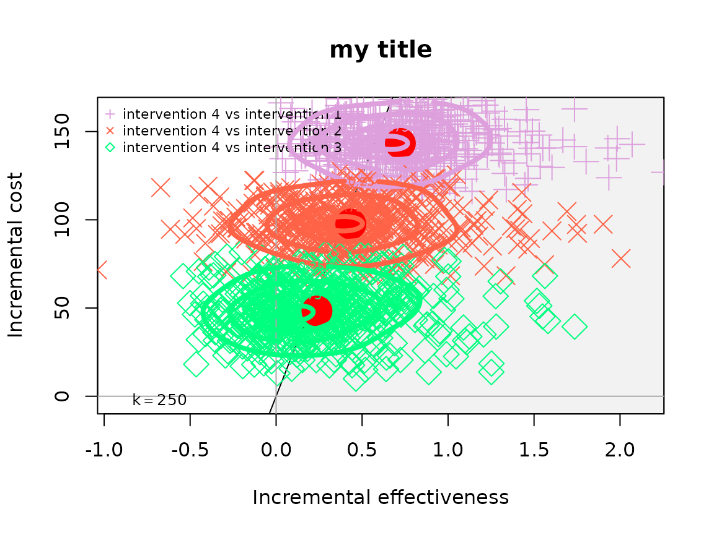

Introduction
The intention of this vignette is to show how to plot different
styles of contour plot using the BCEA package and the
contour() and contour2() functions.
R code
To calculate these in BCEA we use the bcea()
function.
The plot defaults to base R plotting. Type of plot can be set
explicitly using the graph argument.
contour(he, graph = "base")
contour(he, graph = "ggplot2")
# ceac.plot(he, graph = "plotly")User-defined contour levels can be provided. The levels
and nlevels arguments specify the quantiles or number of
levels. The base R levels arguments are kept for back-compatibility and
the ggplot2 style arguments are used in the associated
plot.


Other plotting arguments can be specified such as title, line colour and thickness and type of point.
contour(he,
graph = "ggplot2",
title = "my title",
point = list(color = "blue", shape = 2, size = 5),
contour = list(size = 2))
#> Warning: Using `size` aesthetic for lines was deprecated in ggplot2 3.4.0.
#> ℹ Please use `linewidth` instead.
#> ℹ The deprecated feature was likely used in the BCEA package.
#> Please report the issue at <https://github.com/giabaio/BCEA/issues/>.
#> This warning is displayed once every 8 hours.
#> Call `lifecycle::last_lifecycle_warnings()` to see where this warning was
#> generated.
contour(he,
graph = "base",
title = "my title",
point = list(color = "blue", shape = 2, size = 2),
contour = list(size = 2))
Alternatively, the contour2() function is essentially a
wrapper for ceplane.plot() with the addition of contour
lines.
contour2(he, graph = "base")
contour2(he, graph = "ggplot2")
# ceac.plot(he, graph = "plotly")Other plotting arguments can be specified in exactly the same way as above.
contour2(he,
graph = "ggplot2",
title = "my title",
point = list(color = "blue", shape = 10, size = 5),
contour = list(size = 2))
contour2(he,
graph = "base",
title = "my title",
point = list(color = "blue", shape = 2, size = 3),
contour = list(size = 4))
Multiple interventions
This situation is when there are more than two interventions to consider.
R code
Because there are multiple groups then the quadrant annotation is omitted.
contour(he)
contour(he, graph = "ggplot2")
The scale argument determines the smoothness of the
contours.
contour(he, scale = 0.9)
contour(he, graph = "ggplot2", scale = 0.9) ##TODO: what is the equivalent ggplot2 argument?
The quantiles or number of levels.
contour(he, nlevels = 10)


contour(he,
graph = "ggplot2",
title = "my title",
line = list(color = "red", size = 1),
point = list(color = c("plum", "tomato", "springgreen"), shape = 3:5, size = 2),
icer = list(color = c("red", "orange", "black"), size = 5),
contour = list(size = 2))
contour(he,
graph = "base",
title = "my title",
line = list(color = "red", size = 1),
point = list(color = c("plum", "tomato", "springgreen"), shape = 3:5, size = 2),
icer = list(color = c("red", "orange", "black"), size = 5),
contour = list(size = 4))Again, this applies to the contour2() version of contour
plot too.
contour2(he, wtp = 250)
contour2(he, wtp = 250, graph = "ggplot2")
The styling of the plot for multiple comparisons can specifically change the colour and point type for each comparison.
contour2(he, wtp = 250,
graph = "ggplot2",
title = "my title",
line = list(color = "red", size = 1),
point = list(color = c("plum", "tomato", "springgreen"), shape = 3:5, size = 2),
icer = list(color = c("red", "orange", "black"), size = 5),
contour = list(size = 2))
contour2(he, wtp = 250,
graph = "base",
title = "my title",
line = list(color = "red", size = 1),
point = list(color = c("plum", "tomato", "springgreen"), shape = 3:5, size = 2),
icer = list(color = c("red", "orange", "black"), size = 5),
contour = list(size = 4))
Reposition legend.
contour(he, pos = FALSE) # bottom right